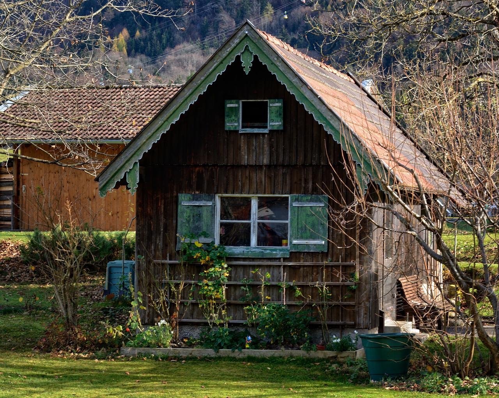

2012
Alles begann in unserer kleinen Hütte mit einem sehr kräuterreichen Garten, dem Wunsch zweier Schwestern nach Nachhaltigkeit und Kreativität. Hier entstand unser kleines Gewerbe und unsere Gartenkräuterseife, die zunächst bei Freunden, Verwandten und Bekannten schnell Gefallen fand. In der kleinen Hütte wurden viele Seifenrezepte kreiert, ausprobiert und umgesetzt. Das Sortiment wuchs zunehmend und schon bald waren unsere himmlischen, regionalen Kräuterseifen im ganzen Ort bekannt und beliebt.
